Hi, and welcome to game.midoshiro.com
It pains us to say that our site may be incomplete, but we are working to bring you more updates and info on the game as we speak!
When you hit an incomplete patch of walkthrough (e.g. Chapters 4 and later), feel free to watch a recorded playthrough on YouTube. On some videos, other players have left comments with excellent advice and strategy.
You can also visit our contact page to share your thoughts, ideas, and compliments. Diligent and confident completionists can also upload their best save files to help us provide the best and accurate info on the game!
After solving the mystery of the white shadow in Ruan, Estelle and her teammate travel to Zeiss to assist with the local Bracer Guild. Zeiss has been experiencing strange earthquakes recently, and Estelle experiences one for herself soon after landing.
With the help of Professor Russel's seismographs and the number crunching capabilities of the Capel supercomputer, the team determines that Elmo Village is the source of the earthquakes. They make their way to The Fountainhead, a cave at the back of the village providing the water for the hot springs.
As the team investigates deeper into The Fountainhead, they meet Legion VIII, Walter, the Lanky Wolf, and ... !?!?
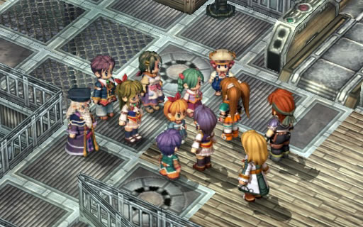
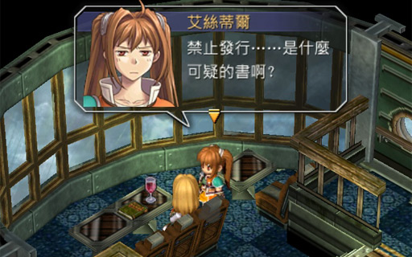
Estelle: Banned ... is this some sort of suspicious book?
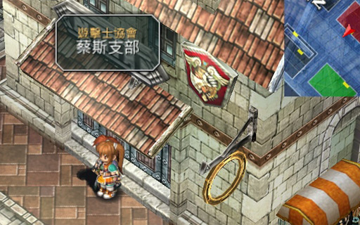
To progress with the game after buying the airship tickets, you only need to talk to your teammate (Scherazard, Agate), Kloe, and Olivier (remember to talk to him twice to get Gambler Jack #3).
Upon landing at Zeiss, the team is greeted with a strong earthquake. Earthquakes are rare in the Liberl Kingdom, so the team heads to the Zeiss Bracer Guild to investigate further.
Kirika informs the team that there was an earthquake at the Wolf Fort a few days earlier, yet there was no shaking in Zeiss. She suspects the Ouroboros may be related to these strange events and asks the team to investigate further.
Before leaving, check the job board for five sidequests.
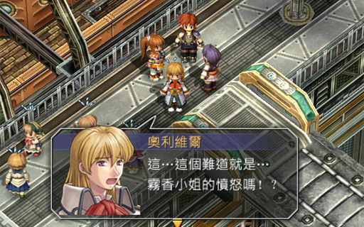
Olivier: Is ... is this the anger of Miss Kirika!?
Since we're currently at the Bracer Guild, we can start the "The Stolen Sign" sidequest by talking to Kirika. Note that we can't finish it right now because the game forces us to visit the Russel Workshop.
Once you find the card behind the clock tower, head to the Russel Workshop at the bottom-left corner of Zeiss and watch a long cutscene.
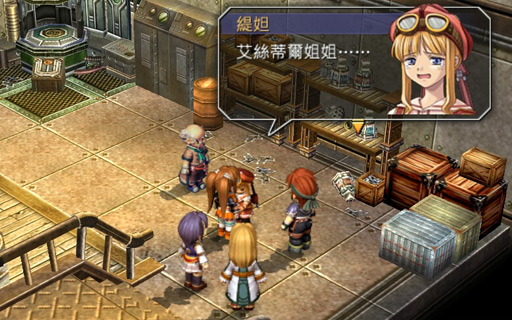
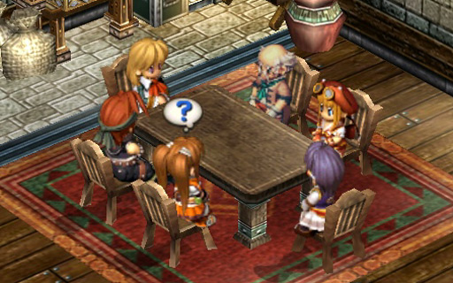
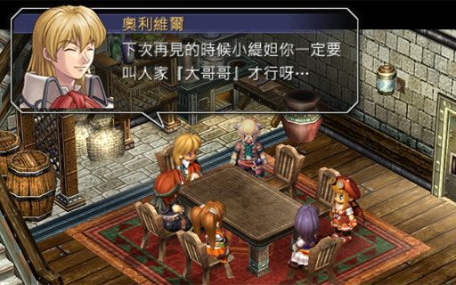
Olivier: Next time we meet Tita, remember to call me "Big Brother"
Now that we can use the escalator to the Central Factory, head to the 5th floor to complete the next step of "The Stolen Sign" sidequest. Then go to the 3rd floor to start the "Septium Gun Test Run" sidequest.
Finally, go to the basement floor and take the south exit in the hallway. Continue walking down and exit to the Kaldia Tunnel. Talk to Rudy where he will tell Estelle that he saw someone suspicious. This affects your BP so don't skip this step!!
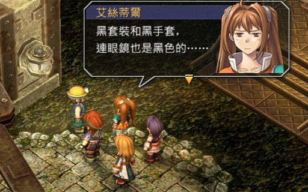
Estelle: Black clothing and black gloves, even the glasses are black ...
Estelle: No matter how you think of it, this is a really suspicious weirdo
Before advancing the story, take the east exit out of Zeiss and head to the Leiston Fortress to complete a sidequest. This is basically your one and only chance to complete it as it has a short expiry time. If possible, buy some accessories to protect against Blind, Freeze, and Faint status effects.
After completing the sidequest, head back to Zeiss and report your findings. With the cash, let's do some shopping:
When you're done with Zeiss, take the south exit for the Tratt Plains.
Feel free to fight monsters here, especially since you'll need to in order to complete the Septium Gun Test Run sidequest.
At Wolf Fort, enter the room at the left and talk to Captain Pais. Then talk to eeeeeeverybody and then talk to Pais again. Here is the list of everbody to talk to (locations are relative to Pais):
Go back to the left building and talk to Pais again. Now leave and head back to Zeiss. When you leave the map, Pais chases after you for a boss fight
We can see that Sanktheim Gate got pretty messed up by the earthquake, with stuff fallen and scattered all over the place. Looks like the earthquake was pretty strong (hint hint). In any case, the team starts their investigation by trying to find Sub-captain Tarwat.
Estelle starts at some sort of reception desk. Enter the room beside it (appears to be a dormitory) and there is a room to the left. Talk to Sub-captain Tarwat and answer the question correctly for bonus BP.
Afterwards, make your way to the roof and talk to Chesley who saw the suspicious person and tells you to also talk to Dami in the cafeteria. Make your way down again and enter the cafeteria (door directly across from the reception desk).
Talk to Dami and she will explain what she saw on the outer wall. Based on his superhuman ability to jump off the wall, the team concludes their suspicious sunglasses guy might be a Legion as well. The team decides to go back to Zeiss and report their findings.
Exit the wall and head counterclockwise for the stairs down. Before you leave, remember to stop by the cafeteria and talk to the chef to sample some Eastern Hotpot: "Power" $1200. Walk back to Zeiss (remember to fight 15 or more monsters to complete the Septium Gun Test Run sidequest).
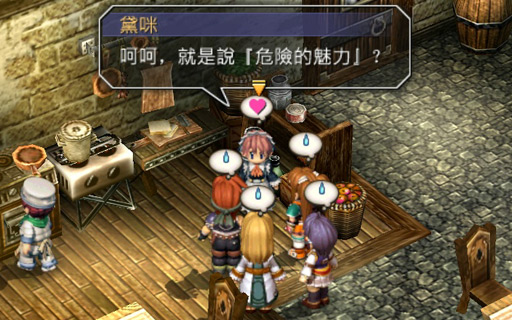
Dami: Well, instead of saying suspicious, why not say he was a brave and dangerous guy?
Dami: huhuhu, or is it "a dangerous charisma"?
When you return to Zeiss, head for the Bracer Guild. Professor Russel is waiting with a set of 3 seismographs which needs to be placed at the Kaldia Tunnel, Leiston Fortress, and the Tratt Plains. But since we need Tita to work the machines, we need to choose to leave out either Kloe or Olivier.
Advice If you head upstairs, you can swap out team members. You should also consider removing all equipment and quartz from the teammate that will be "swapped out" to free up quartz and accessories for Tita.
When Tita joined my party, everyone was about 10 levels ahead of her, so she start off relatively weak (and when she does level up, she's still a bit weak). But I shouldn't expect too much from a kid anyways, right?
Tita's attacks tend to be a bit weaker (around Kloe-level damage), but she makes up for it with her cannon's range (which can be extended via accessories) and the "blast radius". Most of her weapons has a "small circle" blast radius, which can simultaneously hit two enemies positioned beside each other. Later on, there will be one or two weapons with a "medium" radius, which will make Tita a bit more useful.
We can place the seismographs in any order. But before then, check the job board for more sidequests. There is no need yet to report to Kirika (unless you're desperate for the cash).
There's quite a few new sidequests available. For efficiency, we'll first head to Elmo Village to "Defeat the Peeping Tom", then defeat the "Tratt Plains Monster 2" on our way back to Zeiss. Back in the city, we'll do the "Parts Search" in the Central Factory, and then report to Kirika.
Once reported, Estelle should now be Bracer Rank E.
Now that we've caught up on the sidequests, head back to the Central Factory and take the elevator to the basement to put the seismograph in the Kaldia Tunnel.
Walk through the tunnels (and collect treasures on the way) until you reach the next map. You should see a restoration point and a bridge. Walk on the bridge and Tita will set one of the seismographs. Once that's done, Anelace and Scherazard/Agate will conveniently stroll by.
If Estelle is partnered up with Scherazard (so that Anelace and Agate walks together), the game presents some additional conversation. I think Tita gets a bit angry in this event -- when/if I replay this game, I'll take a screenshot of this.
After this, continue deeper into the Kaldia Tunnel to do the sidequest.
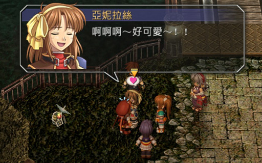
Anelace: ........... No, I can't keep it in anymore!!!
Anelace: Such a cute kid, I can't help but want to hug her~!
Tita: wuuu...ehhh~....???
Anelace: Ahhhhahaha! Even now, her expression is so cute!
Anelace: Scherazard! Can I bring her home!?
Now backtrack all the way back to the Central Factory, go to the "town" part of Zeiss, and take the south exit to the Tratt Plains.
Head to the lake in the middle of the Tratt Plains and go right (don't go down-right to the Wolf Fort though).
Advice There will be an upcoming forced battle when entering the map where Tita will lay the seismograph, so it is prudent to fully heal and save once you're near the lake.
You start off in an ambushed state, so the enemies go first. Pay attention to the turn bar. If you were as lucky? as I was, one of the enemies' turns had a Critical AT bonus, so whoever has 200 CP should "steal" the bonus.
A very good idea to keep the enemies relatively close together and then have Tita steal a Critical AT bonus with her S-Craft at 200CP. That will severely weaken the enemies to the point where a regular attack or two will finish them off.
The enemies use a few common moves:
After this forced battle, there is basically no need to return to this half of the Tratt Plains any more in this chapter. So this is probably your last chance to take a detour to the Carnelia Tower for more experience and items without needing to do significant backtracking. I mention this because I totally forgot to visit the Carnelia Tower during my playthrough v_v...
Medium Medicine, Resurrect Medicine, EP Restore 1, x20
Carnelia Charm
Seafood Jelly, Medium Medicine
EP Restore 1, Action 2
Ice Skates (shoes), Five Ring Stick, Blue Apesheet Shirt, Red Jacket, Attack 3
Start heading back to Zeiss, but take the south fork in the road (heading to Elmo Village) to complete two more sidequests.
You literally can't miss the monster blocking the path...
After defeating it, head to fortress gate and talk to the soldier. Now run back down and Tita will automatically install the seismograph beside the Caution sign. A short cutscene later, and you are free to go back to Zeiss.
Go to the Central Factory and take the elevator to the 5th floor and enter the calculation room. Watch the cutscene and watch Leiston Fortress shake.
Capel calculates the co-ordinates of the earthquake source to be (165.88, -228.35). On the map, if Leiston Fortress is 12 Arge east and 378 Arge north of Zeiss, then ...
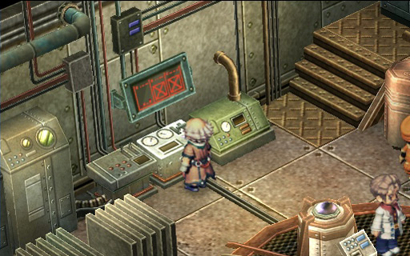
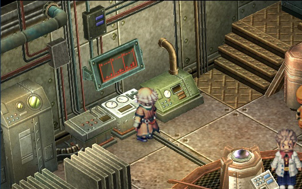
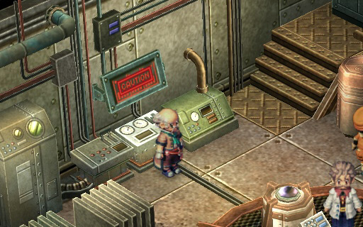
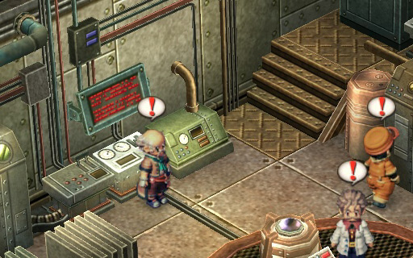
I find it a very nice touch how the status screen behind Professor Russel changes during the cutscene to reflect the dialogue. In the first image, they were receiving data from only one seismograph, so the other two graphs are X'ed out. Later, the screen shows three animated bar graphs. Then, when an earthquake is imminent, the screen shows "CAUTION", and soon starts scrolling a nonstop stream of data.
Not pictured: the screen also blinks "Calculation Completed" too. It was a tight fit, but they managed to fit all the words in that small screen.
Before heading to Elmo, remember to stop by the Bracer Guild and report on your sidequests. Kirika might first reward you only for your efforts on investigating the earthquake, so you might need to report to her twice to get the sidequest rewards.
Advice The end-of-chapter boss fight is coming up soon. The bosses are weak to Wind magic, so it would be a good idea to make sure everyone has a Wind Quartz
Estelle and team arrives at Elmo Village. The old lady comes and shows the team some weird phenomenon that thank goodness is not an earthquake. But instead, the hot springs in the center of the village is boiling. The old lady confirms there is nothing with the pumping system, so it must be that the temperature of the hot springs water itself has increased.
Could be related to the earthquake and stuff. The source of the hot springs is located in a cave at the back of town, but it's fenced off, so the old lady gives Estelle a key to open the gate.
Before heading out to the source of the hot springs, remember to also purchase some food in the Maple Leaf Inn: Passionate Egg Rolls, Hanamaru Milkshake, Inland Cuisine: "Pure" (內陸佳餚 粹), and Eastern Hotpot: "Mountain"
Medium Medicine, Resurrect Medicine
Blue Apesheep Shirt, Awakening Medicine, Seven-coloured Mystery Balls, Double Star (shoes)
x20 , Softening Balm, Septium Artillery
Caution In some spots on the floor, you might see a hole. This is where high-pressure, HOT water will spew out at regular intervals. Get the timing right so you don't take any unnecessary damage.
In the final map, there is a hot spring in between the treasure chests holding the Softening Balm and the Septium Artillery. Standing inside it will heal your HP. This is a useful area to save too, as the boss fight is somewhat long.
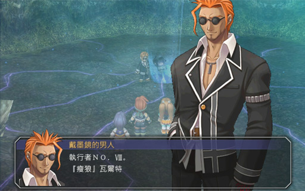
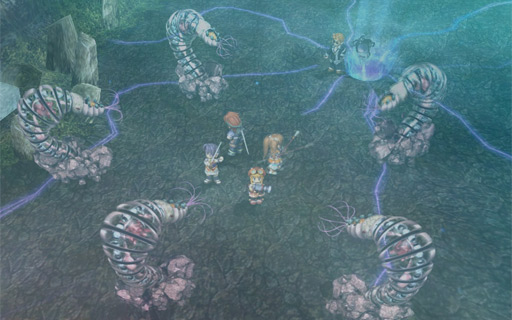
Warning Once a worm is hit, it will begin to use an earthquake attack that hits everyone. So focus on the worms one by one. Note that this also means only Estelle and Agate/Scherazard can use their S-Crafts safely.
The Parasites aren't really much of a threat, so you can feel free to deal with them however you want. They pretty much just fly around and leech HP or CP. If you do let them live, try keeping the team close together to maximize the effect of La Tear(a).
Everyone except Agate (Estelle, Kloe, Tita, Olivier, Scherazard) should cast Air Strike at the same Abyss Worm. Agate should use regular attacks instead. Try to estimate the damage correctly as it would suck for one teammate to kill off a worm, and the others to cast their spells on random, separate worms (this is a recipe for disaster).
The worms typically either do a physical attack (with a chance of poison) or use Thunder. Once they're hit, they basically exclusively use "Strong Earthquake From Afar" (來自深遠的激震) which hits everyone for ~700 damage. It doesn't sound like much ... until all 5 cast it one after another (hence the strategy to focus on the worms one at a time).
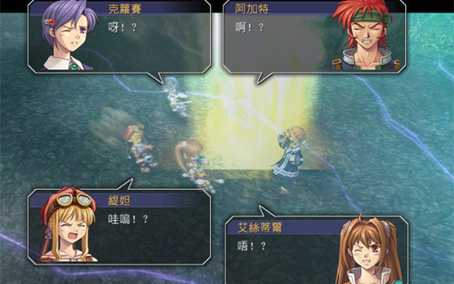
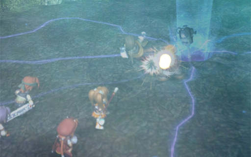
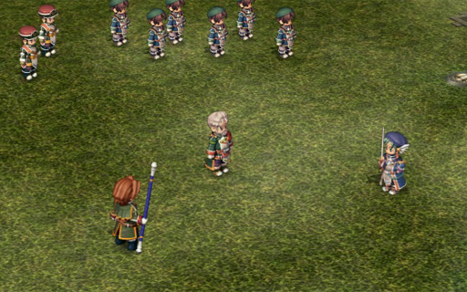
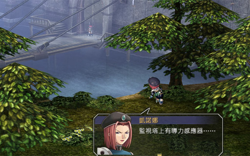
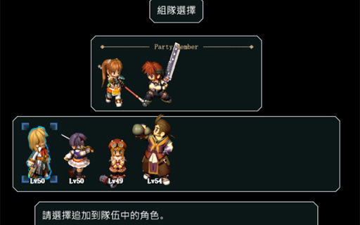
If you haven't already, finish off your sidequests. Go back into the Bracer Guild and check out the job board for one last sidequest:
Once you are done, go to the airport (remember, it's on the upper level) and talk to the person in the booth and confirm that you're done with Zeiss. Next stop is Grancel.
| Quest/Action | BP | Total |
|---|---|---|
| Main Quest: Investigate Earthquake | 2 | 8 |
| ... talked to Rudy about suspicious person | +3 | |
| ... said "both" at Sanktheim Gate | +3 | |
| Main Quest: Investigate Earthquake Source | 6 | 8 |
| ... deduce Elmo Village is the source | +2 | |
| Sidequest: The Stolen Sign | 4 | 4 |
| Sidequest: Special Training Invitation | 3 | 5 |
| ... and win all three rounds | +2 | |
| Sidequest: Septium Gun Test Run | 2 | 3 |
| ... and won 15 or more battles | +1 | |
| Sidequest: Kaldia Tunnel Monster | 3 | 3 |
| Sidequest: Tratt Plains Monster | 3 | 3 |
| Sidequest: Parts Search | 2 | 3 |
| ... and found all 8 parts | +1 | |
| Sidequest: Tratt Plains Monster 2 | 4 | 4 |
| Sidequest: Ritter Road Monster | 5 | 5 |
| Sidequest: Defeat the Peeping Tom | 3 | 3 |
| Sidequest: Find the Hotel Guest | 5 | 5 |
| Total (this chapter) | 54 | |
| Total (cumulative) | 108 | |
Recipes: Fruit Kingdom, Bitter Tomato Sandwich, Bird Meat Lava Bake, Cool Herb Tea, Passionate Egg Rolls, Hanamaru Milkshake, Inland Cuisine: "Pure", Eastern Hotpot: "Power", Eastern Hotpot: "Mountain", Seafood Jelly, Seven-coloured Mystery Balls
Books: Liberl Times #3, Gambler Jack #3

Readers' Comments